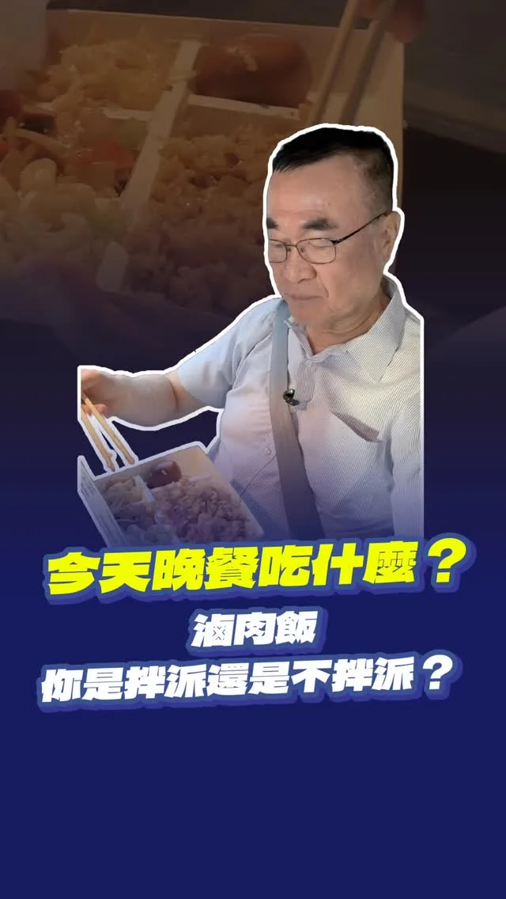

來梨山見見鄉親、老朋友們，順道回來嚐嚐香濃回甘的 #香鄉茶葉蛋！
Posts
來梨山見見鄉親、老朋友們，順道回來嚐嚐香濃回甘的 #香鄉茶葉蛋！

@pumashen:▓
@pumashen:日本行出發前，助理交給我一個任務⋯


行程空檔補給一下，最愛鬍鬚張筍絲。 但滷肉飯，怎麼可以不拌？當然要拌，這樣才香！


戰貓、隆貓合體！不談別的，先擼貓🐈 邀請 蕭美琴 Bi-khim Hsiao 副總統來到高雄，當然不能錯過貓奴行程。 「勘熟所」是寵物友善餐廳，同時也是收容與送養的愛心中途之家。老闆娘Shiny投入動物救援已經16年，也和我們分享黑貓「洁洁」、虎斑貓「宅宅」從救援、醫療、照護、社會化到等待認養的故事。 才進到店裡坐下，美琴副總統就立刻聊起貓，從家裡4隻貓的個性，一路聊到過去救援毛孩的故事，其中一隻就是大家都很熟悉的「蔡想想」。 每一隻被接住的毛孩背後，都有很多人的時間、心力與付出。因此，我提出「人寵共好的高雄：毛孩四個寶」，未來要增加寵物友善公園與活動空間、建立友善商家與毛經濟產業圈、擴大生命教育與責任飼養，也要持續強化中途照護、源頭管理與動保量能。 毛孩早已是許多家庭重要的一份子。一座城市如何對待動物，也反映了這座城市如何看待生命。希望未來的高雄，讓毛孩有人疼、中途有人挺、飼主有更友善的環境，讓每一個生命都能被好好接住。 戰貓＋隆貓，合體成功！🐈🐈⬛ 登真-邱議瑩 黃彥毓 前鎮小港 我願意 鄭光峰 高雄市議員 黃敬雅 Huang Ching-Ya 吳昱鋒-科技先鋒


The water party was a huge success thanks to everyone's enthusiasm! Thank you, Councilor Lin Yen-...

"The shortest shortcut is the long way 'round"—that has always been my motto

@pumashen:今天再度來到北投市場 有位弟弟找我PK陀螺 謝謝弟弟 我好久沒打陀螺了ಥ_ಥ


@chen_tingfei:報告！今天輪到軍人妃妃泰迪熊報到🫡🐻 這身裝備是不是很帥氣呢！ 妃妃熊持續解鎖中🔓 明天會是哪一隻呢？👀


20260918 談天說地論臺灣｜龍介的直播

#世界無車日，是重新思考城市交通的關鍵時機。 除了持續提升低碳運輸的品質與使用率，更要從市民每天的生活需求出發，讓步行、騎自行車、大眾運輸與汽機車，都能有更完善的交通環境，打造安全、便利、舒適的高雄。 #五大政策，打造高雄友善交通新生活。 一、落實人本交通，把好走的路還給行人 下了車，大家都是行人。 目標在2030年，將都市計畫區內12米道路的人行道覆蓋率提升至65%。讓城市裡的長輩、孩子，以及推著嬰兒車的父母，都能安心行走。 二、推動安心通學，守護每一個孩子的上學路 推動「安心通學圈」，以校園周邊為核心，全面改善學童通學路線，並逐步將範圍延伸到社區，打造15分鐘步行生活圈，讓孩子安全上學，也讓家長更加放心。 三、打造友善步行環境，讓城市更舒適 1. 推動「八年百萬植樹計畫」，全面檢視全市樹種，以原生樹種為核心，增加具韌性的行道樹，讓更多道路擁有綠蔭，也降低颱風造成樹木倒塌的風險。 2. 打造「城市風廊」，透過都市規劃將基地通風率納入都市更新獎勵，讓都市水系與綠蔭相互串聯，形成自然通風廊道，降低熱島效應。 3. 推動「連續型遮蔭步道」，善用騎樓、建築物內縮、穿堂、智慧型遮陽傘及連續遮廊等方式增加行人遮蔭，參考新加坡、韓國等城市經驗，讓市民擁有更舒適的步行環境。同時善用透水鋪面、路樹養護等方式更新人行道，減少積水並降低交通噪音。 四、大眾運輸使用更安心，提升候車與轉乘品質 改善公車候車區與照明系統，逐步建置公車等候區緊急服務鈴，並與轄區派出所連線，提升候車環境的安全與便利，讓市民搭乘大眾運輸更加安心。 五、高雄「雄好騎」，打造更完整的自行車生活圈 1. 推動YouBike前30分鐘免費，鼓勵短程通勤、觀光騎乘與低碳代步。 2. 推動「銀髮樂騎計畫」，開放敬老卡扣點使用YouBike與電輔車，建立「敬老卡加傷害險」一站式開通機制，降低長輩使用門檻。 3. 升級自行車道與站點，串接捷運、輕軌沿線，以及商圈、住宅區與觀光景點，增設保護型自行車道，並將YouBike站點擴增至1,800站。 4. 導入AI與大數據改善車輛調度、維修效率與站點配置，將低使用率站點移往需求熱區，補足公車轉乘最後一哩路。 5. 推動自行車上輕軌，先於離峰時段試辦一般自行車上輕軌，強化自行車與大眾運輸的轉乘便利性。 一座好的城市，交通不只是通行，更與每一個人的日常生活息息相關。 從步行、騎車到搭乘大眾運輸，我們要讓每一種交通方式都更加安全、便利、舒適，也讓不同年齡、不同需求的市民，都能享有更好的城市生活。 世界無車日，讓我們一起打造更友善、更宜居、更有活力的高雄。

謝謝各位無名英雄用心守護家園，辛苦了！💪

日本行出發前，助理交給我一個任務⋯
@zenolai:戰貓、隆貓合體！不談別的，先擼貓🐈 邀請 @bikhimhsiao 副總統來到高雄，當然不能錯過貓奴行程。 「勘熟所」是寵物友善餐廳，同時也是收容與送養的愛心中途之家。老闆娘Shiny投入動物救援已經16年，也和我們分享黑貓「洁洁」、虎斑貓「宅宅」從救援、醫療、照護、社會化到等待認養的故事。 才進到店裡坐下，美琴副總統就立刻聊起貓，從家裡4隻貓的個性，一路聊到過去救援毛孩的故事，其中一隻就是大家都很熟悉的「蔡想想」。 每一隻被接住的毛孩背後，都有很多人的時間、心力與付出。因此，我提出「人寵共好的高雄：毛孩四個寶」，未來要增加寵物友善公園與活動空間、建立友善商家與毛經濟產業圈、擴大生命教育與責任飼養，也要持續強化中途照護、源頭管理與動保量能。 毛孩早已是許多家庭重要的一份子。一座城市如何對待動物，也反映了這座城市如何看待生命。希望未來的高雄，讓毛孩有人疼、中途有人挺、飼主有更友善的環境，讓每一個生命都能被好好接住。

@chen_tingfei:每個人都值得被好好守護💖 今天登場的是守護妃熊，未來讓我們一起守護好台南這片土地！
阿純來到大里最大的黃昏市場！

開逛中壢夜市！每一攤都想吃！


讓街道更好走，讓散步成為中壢的日常 一座城市的進步，不只有捷運、道路這些大型建設，也包括每天出門走路時，一些很實際的感受。 過去的中壢復興路，更多是提供車輛通行；現在，我們把更多空間留給行人、自行車，也增加綠樹和休憩空間； 除了拓寬人行空間，也拆除占用道路的違建及電箱等設施，讓人行動線更完整。此外，也新設實體車阻，增加行走時的安全防護；同時整理架空纜線等雜亂設施，讓街道的視覺更乾淨、更舒服。 從人行空間、路口設計，到街道景觀，我們把一項一項的細節做好，讓復興路成為一條可以慢慢散步的街道。 當然，一條復興路改造完成，還遠遠不夠。 目前，中壢中正公園周邊的改造還進行，預計明年3月完工，完工後將能串聯中壢火車站、中壢圖書館、仁海宮等節點，讓中壢市區的生活空間更完整、更便利。 不只是中壢，我們也已經啟動龍潭舊城、富岡老街的人本環境改善計畫，逐步補足舊市區較缺乏的行人空間與公共環境，把市民每天要走的街道建設好，讓人願意走、願意停留，也讓沿街商業有更好的發展空間。


地方建設 聯合競總從永和出發！Ft. 許昭興議員 我們會讓永和更好，讓永和人更喜歡這裡的生活，也讓更多人看見永和的文化底蘊。 2026.09.19

20260918 談天說地論臺灣 @longmedia ｜龍介的直播

大清早的 #西屯市場，真的太熱情了！ 謝謝西屯的市民朋友！ 走進市場沒兩步就被大家的溫暖加油聲包圍，還有攤商大哥連手上的菜都還沒放下，就笑著跑過來要合照。 讓我「足甘心」的是有位大姐在路旁，默默等候很久時間，才擠過人群握著我的手說「我在這裡等你、看你一眼，一定要當選喔！」大家毫無保留的信任，啟臣全部放在心中！ 西屯未來要 #接軌國際、迎來 #臺中國際會展中心 的繁榮，但對啟臣來說，大家每天買菜的日常生活過得舒不舒服，一樣重要。 市場裡有最珍貴的人情味，但天氣熱時真的悶。未來市場的通風溫路跟環境硬體環境，啟臣一定全力推動升級，讓大家採買更輕鬆、攤商做生意也不用再汗流浹背。 謝謝今天給我滿滿能量的西屯鄉親，我們繼續一起拚！ #臺中升級 #幸福加給

Before leaving for my Japan trip, my assistant gave me a mission...

@hammer__lee:行程空檔補給一下，最愛鬍鬚張筍絲。 但滷肉飯，怎麼可以不拌？當然要拌，這樣才香！

臺中有許多來自不同國家的 #新住民，大家帶著各自的飲食、語言與文化，在這座城市生活、落地生根，也讓臺中的樣貌更加多元。 一碗加入椰奶、香茅、地瓜與芋頭的咖哩米線，吃得到越南傳統早餐的家鄉味，也讓我第一次發現，原來咖哩還能有這麼不一樣的搭配，而每一道滋味背後，都有一段生活記憶與文化故事。 新住民帶來新風味，不同文化彼此交流、相互融合，就能激盪出最豐富、最獨特的 #臺中味。 #臺中升級幸福加給 #臺中way

很高興再次來到阿蓮光德寺，參加南部供佛齋僧、育僧誦戒、護國祈福大法會，這已經是我連續第三年來到 #光德寺 。 每次到來，都能感受到大家對 #佛法 的虔誠，也能感受到佛法所帶來的「法喜」與「喜樂」；這場法會不只有「供佛齋僧」，還有「育僧」與「誦戒」，其背後承載的，是讓佛法有人傳，讓善念有人接，讓慈悲一代一代延續下去。 在這個快速變動的社會，每個人都有自己的壓力與不容易，更需要多一點理解、多一點包容，也多一點為別人著想的心；所以對於政治人物來說，不只是參加一場法會，更是一段讓自己放慢腳步、沉澱心情、重新反省的時間，當每天面對不同的聲音與選擇時，更需要時時提醒自己，保持初心，也保有一份自省的心。 必須向所有長年護持法會的法師、護法與志工朋友致上敬意，也希望每次來到這裡，不只是接受大家的祝福，也把這份慈悲、智慧與善念帶回生活，帶到更多地方。 祈願佛法長存、正法久住，祈願社會祥和、國家安定，也祈願 #高雄 每一個家庭都平安健康。
@schuanglawyer:看到好幾則留言催我去睡覺⋯⋯ 好啦，明天起床再繼續拚！ 謝謝大家，晚安。
@schuanglawyer:我快到了！！！

新北樹林鎮前街今天清晨傳來讓人悲痛的消息，一位清潔隊的姊妹在掃街時被酒駕騎士撞上，送醫後離世。我向家屬致上最深的哀悼。 酒駕，我嚴厲譴責。 說實在，清潔隊的兄弟姊妹一直都很辛苦。不管日曬雨淋，城市還沒醒，他們就已經在路上，把新北每個角落顧得乾乾淨淨。 最早出門的人，也該平安回家。 這件事不分黨派，大家都該一起想辦法。除了遏止酒駕，更要讓他們在路上作業時少一點風險。 像窄巷的垃圾清運，可以研擬定點收運，讓隊員少在車流裡穿梭。 這一點，我會跟清潔隊的兄弟姊妹站在一起。他們把新北顧得乾乾淨淨，我們也要把他們顧得平平安安。

民生資訊 嘉義人挺自己人！感謝翁章梁縣長來相挺 兩座城市相互交流串連，新北、嘉義一起升級！ 2026.09.19

@su.chiaohui:開箱新北第三彈——鑽石山城！ 大家都知道新北有得天獨厚的山海美景，而我今天再次請到重量級來賓宣傳我們這次的主題「鑽石山城」，這位VIP就是樂樂⋯⋯的主人—— @tsai_ingwen 小英總統！ 這一次的尋寶紀念品是與漫畫家季雅 @kiyascomic以及插畫家Asta Wu @asta_astawu合作！ 季雅的作品《異人茶跡》帶我們透過茶葉的歷史故事，看見百年以前臺灣茶走向世界的過程；而Asta Wu 除了有和山林製造以及林業署合作的插畫設計，也有自己的「臺灣特色茶」系列插畫。這裡面，都與我們新北山城的製茶文化息息相關，非常推薦大家除了參與這次的藏寶計劃，也看看兩位創作者的精彩作品！ 希望大家一起透過尋寶，更認識新北閃亮亮的「鑽石山城」！